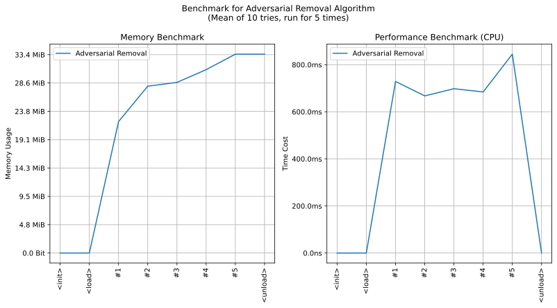

imgutils.restore.adversarial
- Overview:
Useful tools to remove adversarial noises, just using opencv library without any models.

This is an overall benchmark of all the adversarial denoising:
Note
This tool is inspired from Huggingface - mf666/mist-fucker.
remove_adversarial_noise
- imgutils.restore.adversarial.remove_adversarial_noise(image: Image, diameter_min: int = 4, diameter_max: int = 6, sigma_color_min: float = 6.0, sigma_color_max: float = 10.0, sigma_space_min: float = 6.0, sigma_space_max: float = 10.0, radius_min: int = 3, radius_max: int = 6, eps_min: float = 16.0, eps_max: float = 24.0, b_iters: int = 64, g_iters: int = 8) Image[source]
Remove adversarial noise from an image using random bilateral and guided filtering.
This function applies a two-stage filtering process: 1. Random bilateral filtering for b_iters iterations 2. Random guided filtering for g_iters iterations
The randomization of filter parameters helps in better noise removal while preserving image details.
- Parameters:
image (Image.Image) – The input image to be denoised
diameter_min (int, optional) – Minimum diameter of pixel neighborhood for bilateral filtering
diameter_max (int, optional) – Maximum diameter of pixel neighborhood for bilateral filtering
sigma_color_min (float, optional) – Minimum filter sigma in color space for bilateral filtering
sigma_color_max (float, optional) – Maximum filter sigma in color space for bilateral filtering
sigma_space_min (float, optional) – Minimum filter sigma in coordinate space for bilateral filtering
sigma_space_max (float, optional) – Maximum filter sigma in coordinate space for bilateral filtering
radius_min (int, optional) – Minimum windows size for guided filtering
radius_max (int, optional) – Maximum windows size for guided filtering
eps_min (float, optional) – Minimum regularization term for guided filtering
eps_max (float, optional) – Maximum regularization term for guided filtering
b_iters (int, optional) – Number of bilateral filtering iterations
g_iters (int, optional) – Number of guided filtering iterations
- Returns:
Denoised image
- Return type:
Image.Image
- Raises:
EnvironmentError – If opencv-contrib-python is not installed
- Example:
>>> from imgutils.restore import remove_adversarial_noise >>> from PIL import Image >>> >>> img = Image.open('noisy_image.png') >>> cleaned_img = remove_adversarial_noise(img) >>> cleaned_img.save('cleaned_image.png')